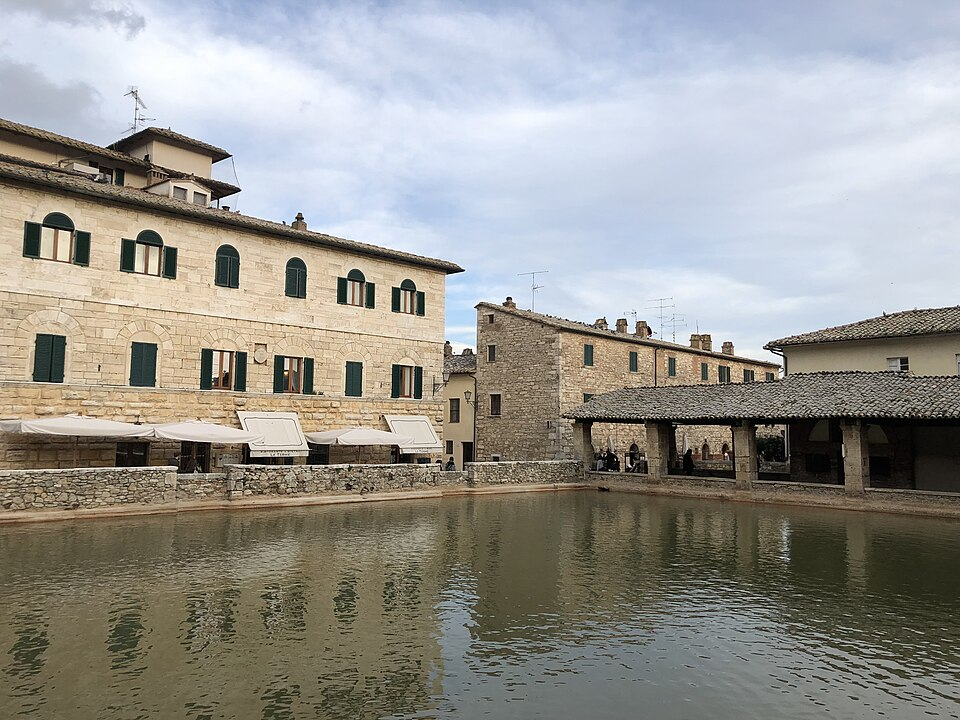
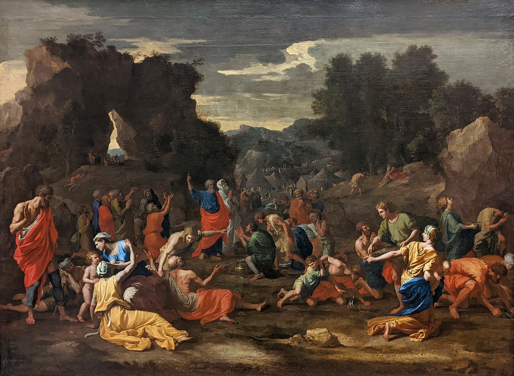

Terrain: the shortest day, but the hardest ending — the Val d'Orcia, the thermal village of Bagno Vignoni, then a long, exposed climb to Radicofani's rock at 896 m. Save something for the last hour. Distance and ascent are measured from the day's GPS track.7
Memory and gratitude are the same muscle. Nine men forgot; one remembered, and turning back to give thanks was the whole of his difference. Today is about what — and whom — you remember.
As he entered a village, he was met by ten lepers, who stood at a distance and lifted up their voices and said, “Jesus, Master, have mercy on us.” When he saw them he said to them, “Go and show yourselves to the priests.” And as they went they were cleansed. Then one of them, when he saw that he was healed, turned back, praising God with a loud voice; and he fell on his face at Jesus' feet, giving him thanks. Now he was a Samaritan. Then said Jesus, “Were not ten cleansed? Where are the nine?”
Luke 17:12–17 · Revised Standard Version, Catholic Edition1
Ten men are healed and ten are glad; that is not the point of the story. The point is that nine of them, in the rush of their good fortune, simply went on — to the priests, to their families, to their restored lives — and one, and only one, and him a foreigner, turned back. Gratitude is that turning. It is memory refusing to move on: the deliberate act of stopping, in the middle of a gift, to remember the Giver. And Jesus' question hangs in the air over the whole day: where are the nine?
You will ride today through a country soaked in memory. At Bagno Vignoni the water has been steaming up out of the ground since before the road had a name — the Etruscans knew it, the Romans, the medieval pilgrims, Catherine of Siena. And you will climb to Radicofani, a fortress remembered now mostly for a famous outlaw. Two kinds of remembering sit at either end of the stage: the pilgrim's, who returns thanks to the source of the healing waters, and the monument's, which keeps a name alive without keeping any gratitude in it. A castle remembers by standing. A saint remembers by kneeling.
Augustine spent the tenth book of the Confessions wandering the “large and boundless chamber” of his own memory, astonished at it — and there, in that inner country, is exactly where he finally found God: not out ahead in the future, not off in some far place, but held all along in the deepest room of what he already carried. To remember rightly, for Augustine, is already to begin to give thanks, because you discover that the One you were looking for was never absent from your own past. The nine forgot. The tenth remembered. Be the tenth.
For what healing, already received, have I never turned back to give thanks — and am I among the nine?
Today's route, San Quirico d'Orcia to Radicofani. Map © CyclOSM / OpenStreetMap. Full elevation profile & all stages →
Out of San Quirico the road runs down into the Val d'Orcia, the most composed landscape in Tuscany — the one the Renaissance painters put behind their Madonnas. A few kilometres on, a short drop off the route brings you to one of the strangest and loveliest places on the whole road.

Photo: Einaz80 (CC BY-SA 4.0) · Wikimedia CommonsThen the day earns its distance. From the valley floor the road tilts up and climbs, long and mostly exposed, toward a black volcanic cone that has been visible for miles: Radicofani, and its fortress on the crown. There is little shelter on the climb; take it in your own gear and your own time. Near the top, the medieval station of Le Briccole once sheltered pilgrims on exactly this ascent. And then the Rocca fills the sky.
Then the Lord said to Moses, “Behold, I will rain bread from heaven for you; and the people shall go out and gather a day's portion every day…” And when the dew had gone up, there was on the face of the wilderness a fine, flake-like thing… When the people of Israel saw it, they said to one another, “What is it?” For they did not know what it was. And Moses said to them, “It is the bread which the Lord has given you to eat.”
Exodus 16:4, 14–15 · Revised Standard Version, Catholic Edition2

The people are three days into freedom and already they are remembering Egypt as if it were a lost paradise — the fleshpots, the bread eaten to the full — and misremembering their slavery as comfort. This is memory gone wrong: nostalgia, which is the enemy of gratitude, editing the past until the hand that fed you looks like the hand that starved you. Into that grumbling God does not send an argument. He sends breakfast.
And he sends it on one strict condition: gather a day's portion every day. No stockpiling, no security, no larder against tomorrow — the manna hoarded overnight bred worms and stank. Each morning the ground was white with enough, and only enough. It is the hardest school in the world for people like us, who want the whole of the future guaranteed in advance: to be given today's bread today, and to have to come back tomorrow, and trust that it will be there again. A pilgrimage runs on exactly this economy. You cannot ride all seven days at once. You are given one stage, and its water, and its climb, and its bed at the end — a day's portion — and tomorrow you must rise and gather again.
They did not even have a name for it. What is it? — in Hebrew, roughly, man hu, from which “manna” comes: the food whose name is a question. Grace is often like that on the road: not the thing you asked for, not recognisable at first, easy to grumble past — a stranger's kindness, an unexpected shade, a spring where you did not expect one. The manna is only ever visible to the grateful. To the nine it is a puzzle on the ground. To the tenth it is the bread of heaven.
Great is this power of memory, exceeding great, O my God — an inner chamber large and boundless! Who has plumbed the depths thereof? Yet is it a power of mine, and appertains unto my nature; nor do I myself grasp all that I am… And men go forth to wonder at the heights of mountains… and pass by themselves without wondering.
Augustine, Confessions X.8 · trans. J. G. Pilkington3
You have climbed all day to a fortress, and you sleep tonight under the great black rock of Radicofani — a castle documented since the tenth century, held once by Ghino di Tacco, the noble-turned-brigand whom both Dante and Boccaccio thought worth remembering.4 It is an impressive thing, the Rocca, and it is worth asking what kind of memory it keeps. A fortress remembers by enduring. It hoards the past the way the Israelites tried to hoard the manna — in stone, against the future, so that a name will not be lost. And it works: the outlaw's name outlived him by seven centuries. But there is no gratitude in a wall. It remembers everything and gives thanks for nothing.
Augustine, in the tenth book of the Confessions, goes looking for God not up a mountain but inward, through the vast rooms of his own memory — and he marvels that men will cross the earth to wonder at high peaks and wide seas “and pass by themselves without wondering.” The whole of a life is stored in there, he finds, and more than a life: somehow God himself is met there, in the deepest chamber, having been present in every year the person cannot even recall. Memory, rightly entered, is not a monument to the self. It is the place where you discover you were carried the whole way.
That is the difference the day has been drawing, and the climb has driven it home in your legs. To remember like the fortress is to keep a record. To remember like the tenth leper — who turned back — is to let the record become thanksgiving: to walk back through the rooms of your own past and, in each one, find not just what happened to you but Who was there. Tonight, high on the rock, do the pilgrim's kind of remembering. Go back over the day, the water and the climb, the whole road so far — and in each room, look for the Giver. That backward walk, all the way down the chamber, is what gratitude is.
Every quotation is reproduced from the edition named; historical statements are drawn from the references below.